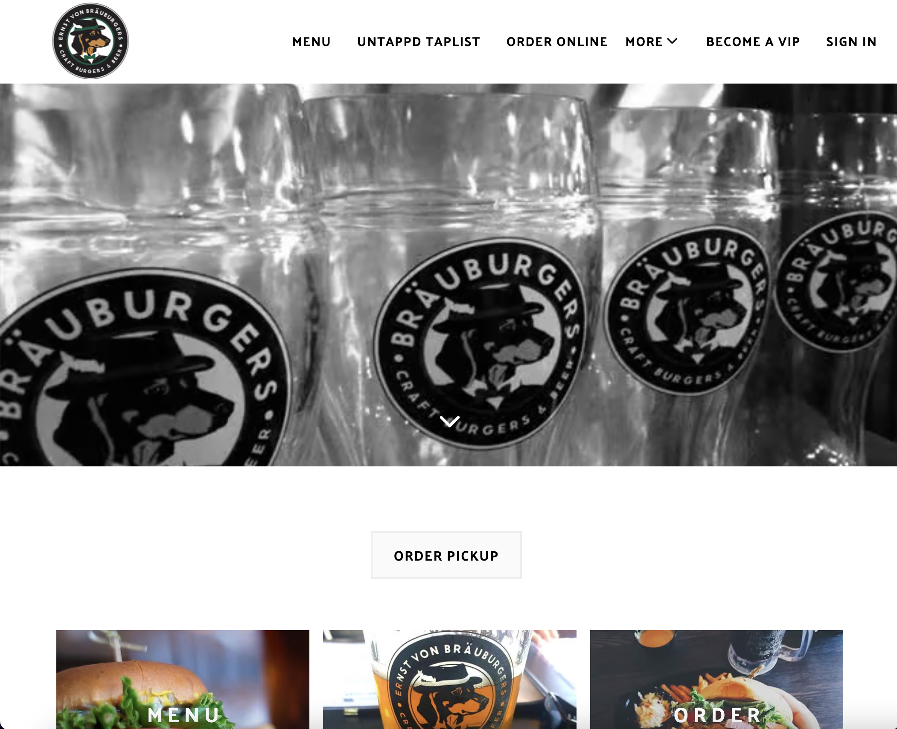
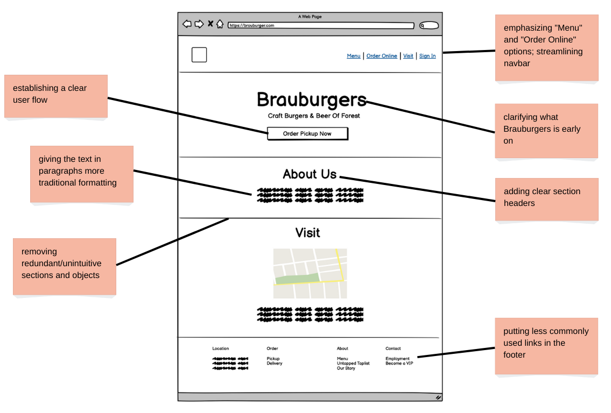
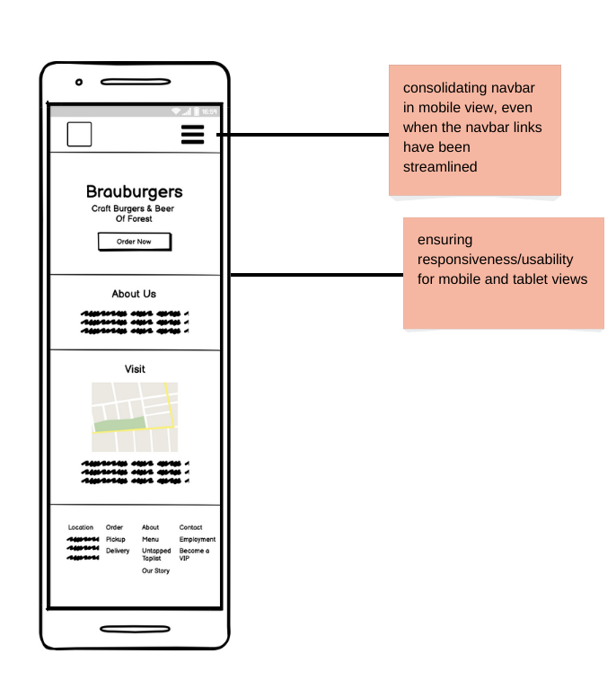
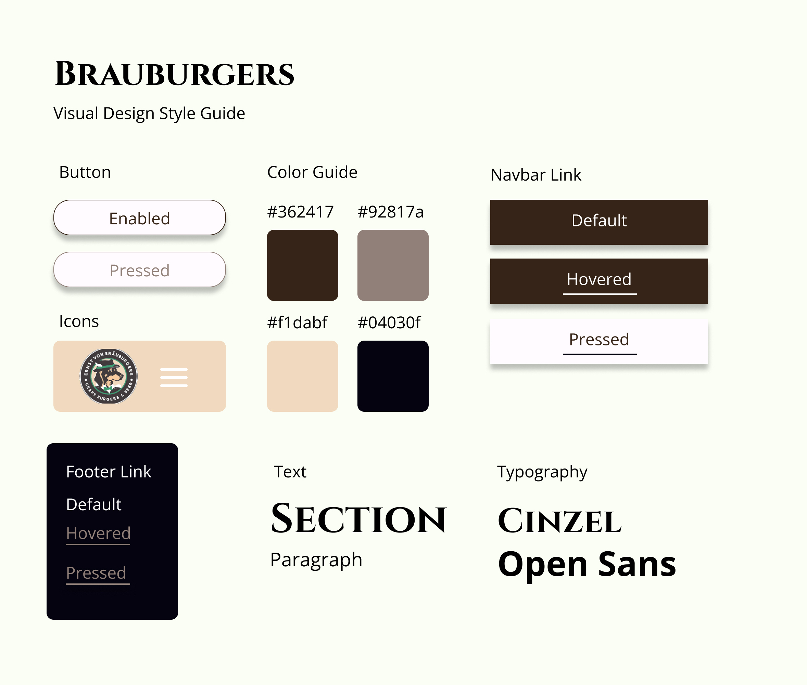
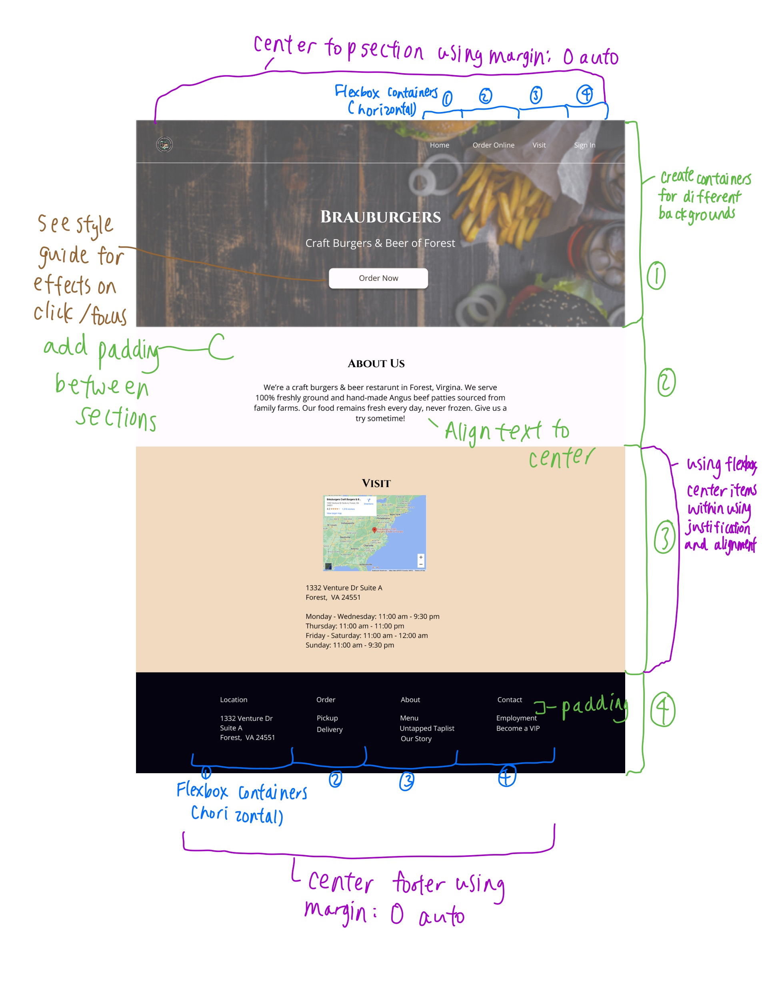
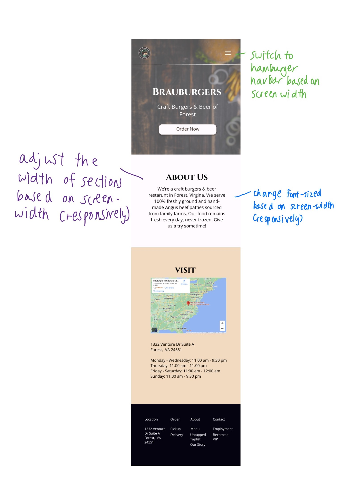
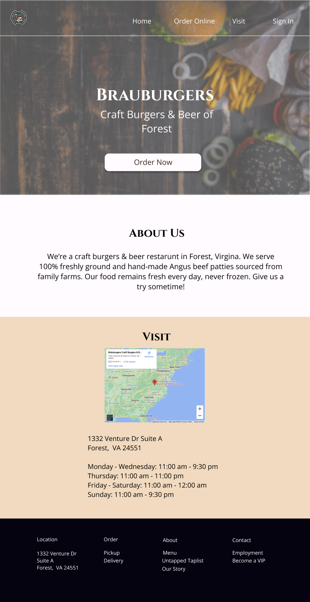

Responsive Redesign
Overview
For my User Interfaces & User Experiences class, we were assigned the
task of redesigning a public-facing webpage and improving upon users'
experiences interacting with this site. I chose to redesign
Brauburgers' home page.
Brauburgers is burgers and craft beer restaraunt in my hometown, so I
chose to redesign the page because the I visited this location many
times growing up.
Part 1: Identifying Usability Problems
Finding Problems
The Brauburgers home page is not very intuitive.- When users first land on the site, they aren't provided with information about what Brauburgers is, or how to interact with the page.
- The different sections of the page do not have clear headers.
- The menu and order images appear to be buttons, but are not clickable.
- The links on the navbar are confusing, so menu and delivery information is harder to find.
- The Brauburgers description is written in bold face, making reading the description feel agressive.
Accessibility
After inspecting this site's accessibility using WebAIM WAVE, I found
the following issues:
- One traditional image was missing alternative text.
- One spacer image (an image used mostly for layout) was missing alternative text as well.
- A <noscript> tag was present on the site, which means there may be less of a focus on the scripted content's accessibility.
Part 2: Visual Redesign
Based on the problems I observed, I created low-fidelity wireframes, a visual design style guide, and high-fidelity prototypes for a redesigned version of Brauburgers' homepage.Low-fidelity Wireframing



Visual Design Style Guide

High-Fidelity Prototyping
  Part 3: Responsive Redesign
Using my protoypes as reference, I created a responsive and redesigned version of Brauburger's home page. You can access it here!
Thanks for reading! I hope this portfolio entry helped pave a way for users' enhanced experience interacting with Brauburgers' website!